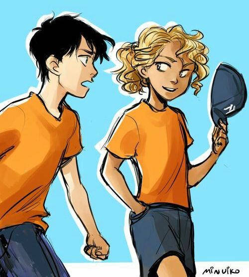
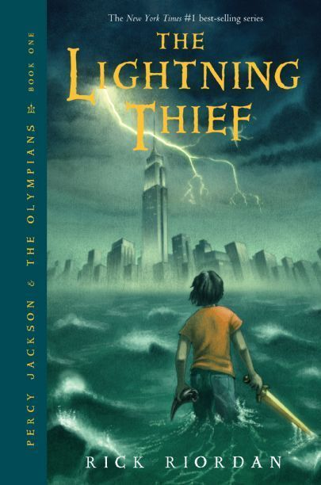
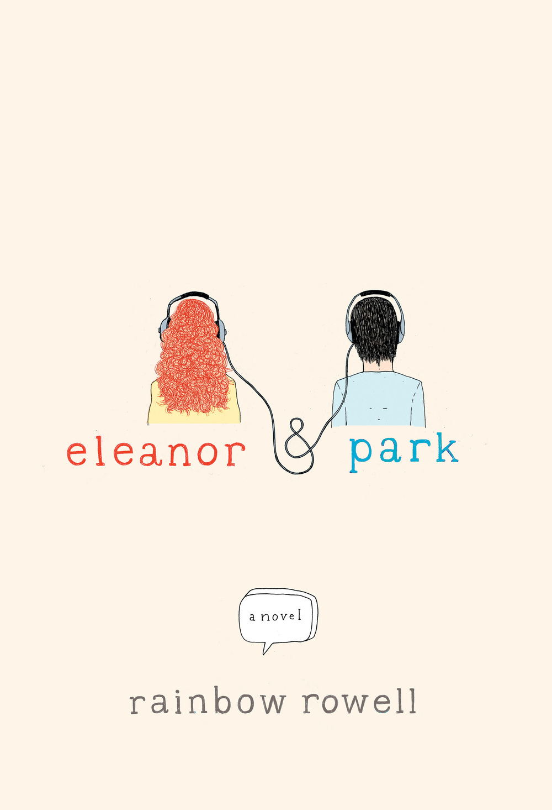
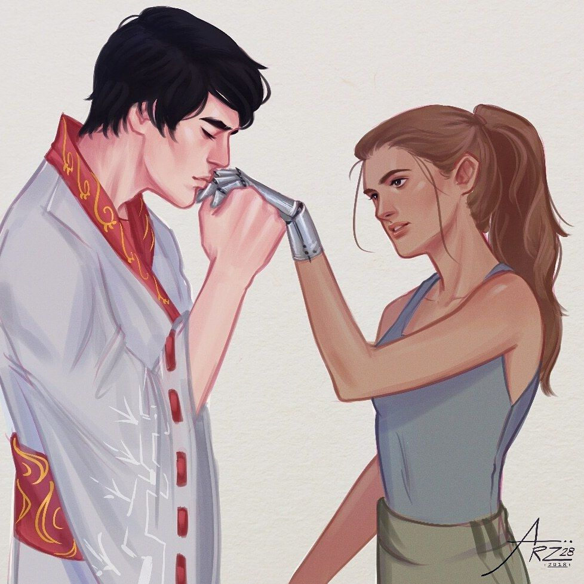
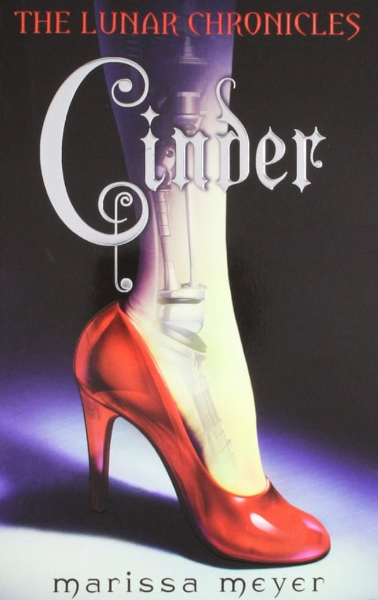
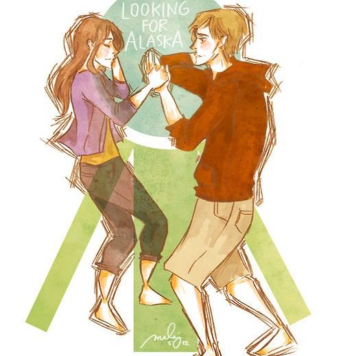
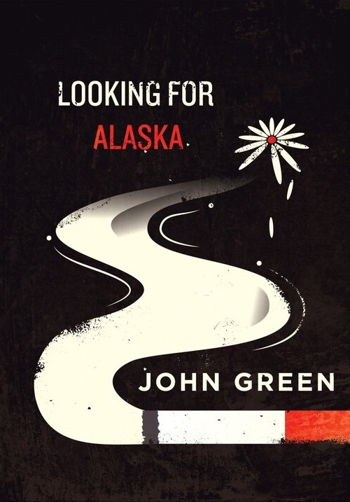
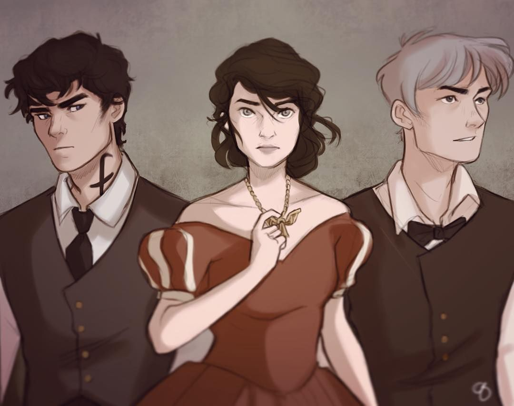
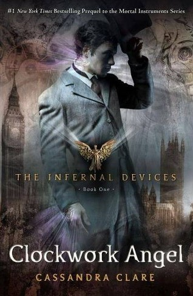

Percy Jackson and the Olympians
(series) |
Twelve-year-old Percy Jackson is on the most dangerous quest of his life. With the help of a satyr and a daughter of Athena, Percy must journey across the United States to catch a thief who has stolen the original weapon of mass destruction — Zeus' master bolt.
Author : Rick Riordan
4/5(CSM)

first book in series-> |
 |
| Eleanor and Park |
Set over one school year in 1986, Eleanor & Park is the story of two star-crossed misfits – smart enough to know first love almost never lasts, but brave and desperate enough to try
Author : Rainbow Rowell
4.2/5(CSM)
|
 |
Lunar Chronicles
(series) |
The Lunar Chronicles are futuristic retellings of classic fairy tales. In CINDER, a teenage cyborg (half human, half machine) must deal with a wicked stepmother,start a rebellion against the evil Queen Levana, and decide how she feels about a handsome prince.
Author : Marissa Meyer
4/5(CSM)

first book in series-> |
 |
| Looking For Alaska |
Miles (Pudge) Halter goes to a boarding school in search of "the great perhaps". There he meets Alaska, a young girl with whom he falls in love. In trying to learn all about Alaska, Pudge learns more about himself and the great perhaps.
Author : John Green
4/5(CM)
 |
 |
The Infernal Devices
(series) |
Clockwork Angel is a Shadowhunters novel. When Tessa Gray crosses the ocean to find her brother, her destination is England, the time is the reign of Queen Victoria, and something terrifying is waiting for her in London's Downworld, where vampires, warlocks, and other supernatural folk stalk the gaslit streets.
Author : Cassandra Clarke
4.2/5(CSM)

first book in series-> |
 |